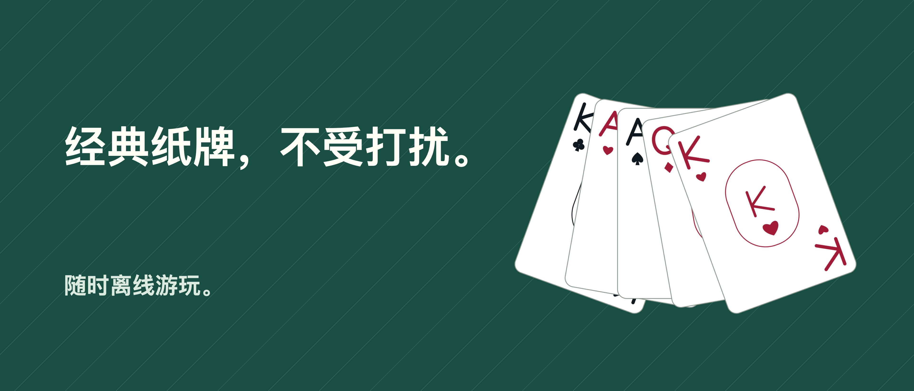

纸牌接龙 Unbound

一张张牌，留一点时间给自己。
和纸牌相伴的片刻，不受打扰。经典接龙支持每次翻1张或3张，无广告、无需IFG账户，也无需订阅。
撤销，再试一次 撤销、重做和合法移动提示均免费提供。可以拖动纸牌，也可以依次点按纸牌和目标位置。放松模式隐藏时间；经典模式显示时间和移动次数。
随时回来继续 存档和统计数据保存在设备上。选择随机牌局，或选择初始布局已有验证解法的牌局，还可以体验每日挑战。随机牌局不保证有解；即使初始布局已经验证，后续选择仍可能让牌局陷入僵局。
Pro带来更多玩法 一次购买即可加入空当接龙、单色／双色／四色蜘蛛接龙、挑战存档和更多个性化选项。共有六种牌桌、六种牌背和三种牌面风格，无需购买或消耗提示。
游戏支持离线游玩。购买或恢复Pro可能需要网络和Apple账户。进度不会在设备间同步，卸载App可能会删除进度。恢复Pro不会找回已删除的进度。